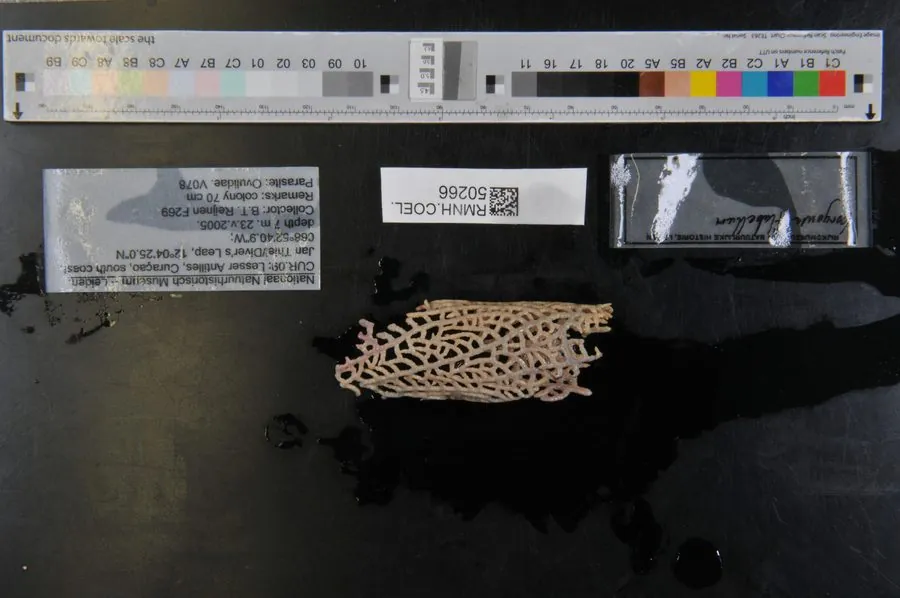

其他无脊椎动物 · 动物界
网扇珊瑚 Gorgonia flabellum

加勒比海珊瑚礁的柳珊瑚，群体展开成网状扇面，珊瑚虫排列在网格上，靠水流捕捉浮游生物，颜色多为紫色或黄色。
- 分类
- 门刺胞动物门纲珊瑚纲目软珊瑚目科柳珊瑚科属网扇珊瑚属
- 栖息环境
- 加勒比海珊瑚礁的礁坡和受洋流冲刷的岩壁，水深 5–40 米
- 地理分布
- 加勒比海及热带西大西洋海域
- 保护级别
- IUCN 暂无评估；非中国原产
物种志
网扇珊瑚的群体展开成扁平的网状扇面，高可达 1 米以上，扇面由许多细枝交织成网格，颜色多为紫色、黄色或褐色。珊瑚虫分布在网格的枝条上，触手细小，群体像一面立在礁石上的网。
它分布于加勒比海和热带西大西洋的珊瑚礁，常见于礁坡和受洋流冲刷的岩壁，水深 5–40 米，靠水流捕捉浮游生物，也会利用共生藻类。网扇珊瑚的扇面垂直于水流方向展开，能最大限度拦截食物颗粒。它生长缓慢，容易受到潜水活动、锚链和病害的破坏，海水升温也会引发白化。加勒比海柳珊瑚群落近年受到疾病和藻类覆盖的威胁，保护需要控制沿岸污染和规范潜水旅游。
形态与习性
- 形态扁平网状扇面，高可达 1 m 以上
- 食性靠水流捕捉浮游生物，也利用共生藻类
- 水深常见于 5–40 m 的礁坡和岩壁
- 生长生长缓慢，扇面垂直于水流展开
- 威胁潜水活动、锚链、病害和白化
- 分布加勒比海及热带西大西洋
趣味知识
- 网扇珊瑚的扇面像一张竖立的网，能拦截水中的浮游生物。
- 它总是让扇面垂直于水流方向，以获得最多的食物。
- 加勒比海的柳珊瑚近年受到疾病和藻类覆盖的威胁。